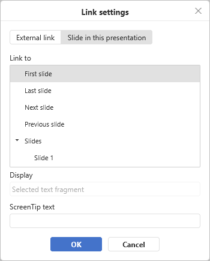

Add links
To add a link in the Presentation Editor:
- Select the object that you want to display as a link, e.g., text fragment, image, or a group of objects.
- Switch to the Insert tab of the top toolbar.
- Click the Link icon on the top toolbar.
-
The Link settings window will appear where you can specify the link parameters:
-
Select a link type you wish to insert:
-
Use the External Link option and enter a URL in the
http://www.example.comformat in the Link to field below if you need to add a link leading to an external website. If you need to add a link to a local file, enter the URL in thefile://path/Presentation.pptx(for Windows) orfile:///path/Presentation.pptx(for macOS and Linux) format in the Link to field.The
file://path/Presentation.pptxorfile:///path/Presentation.pptxlink type can be opened only in the desktop version of the editor. In the web editor you can only add the link without being able to open it.
-
Use the Slide In This Presentation option and select one of the options below if you need to add a link leading to a certain slide in the same presentation. The following options are available: Next Slide, Previous Slide, First Slide, Last Slide, Slide with the specified number.

-
Use the External Link option and enter a URL in the
- Display — enter a text that will get clickable and lead to the web address/slide specified in the upper field.
- ScreenTip text — enter a text that will become visible in a small pop-up window with a brief note or label pertaining to the link to be pointed.
-
Select a link type you wish to insert:
- Click the OK button.
To add a link, you can also use the Ctrl+K key combination or click with the right mouse button where a link should be added and select the Link option in the right-click menu.
It's also possible to select a character, word or word combination with the mouse or using the keyboard and then open the Link Settings window as described above. In this case, the Display field will be filled with the text fragment you selected.
Hover the cursor over the added link to display the ScreenTip that contains the text you specified. You can follow the link by pressing the CTRL key and clicking the link in your presentation.
To edit or delete the added link, click it with the right mouse button, select the Link option in the right-click menu and then the action you want to perform — Edit link or Remove link.